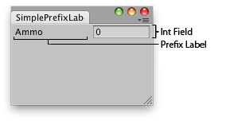

EditorGUILayout.PrefixLabel
Parameters
| label | Label to show to the left of the control. |
Description 描述
Make a label in front of some control.

Simple window that shows the prefix label.
Note that most editor controls already have built-in optional labels that can be specified as one of the parameters. PrefixLabel can be used when there is no such built-in label available, or when you're creating your own editor control from scratch.
PrefixLabel also ensures that when the label is clicked, the linked control will get keyboard focus (if the control supports keyboard focus). The label is automatically linked to the following control coming after it.
using UnityEditor; using UnityEngine;
public class ExampleClass : EditorWindow { static int ammo = 0;
[MenuItem("Examples/Prefix Label Usage")] static void Init() { ExampleClass window = (ExampleClass)GetWindow(typeof(ExampleClass)); window.Show(); }
public void OnGUI() { EditorGUILayout.BeginHorizontal(); EditorGUILayout.PrefixLabel("Ammo"); ammo = EditorGUILayout.IntField(ammo); EditorGUILayout.EndHorizontal(); } }